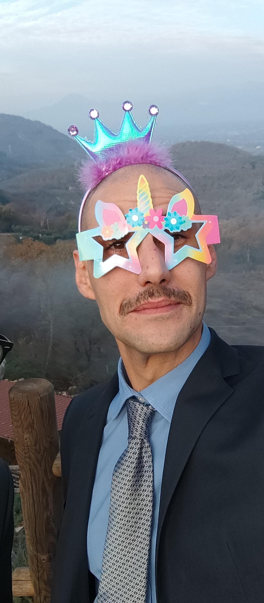
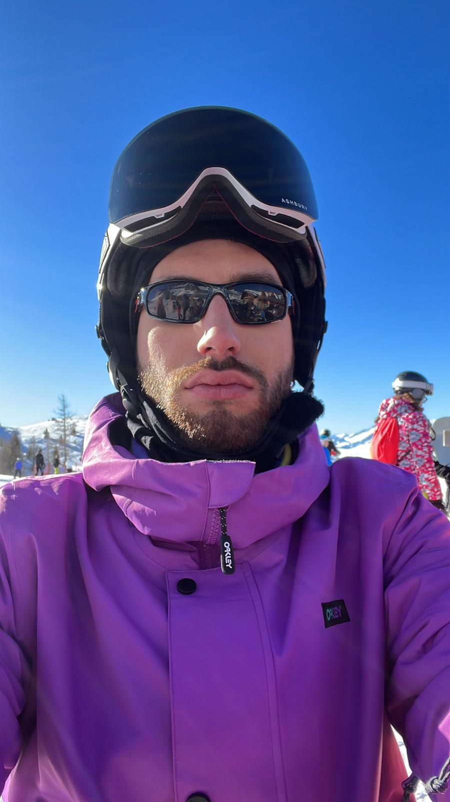
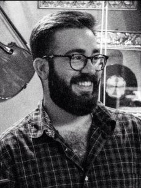
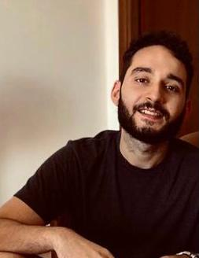
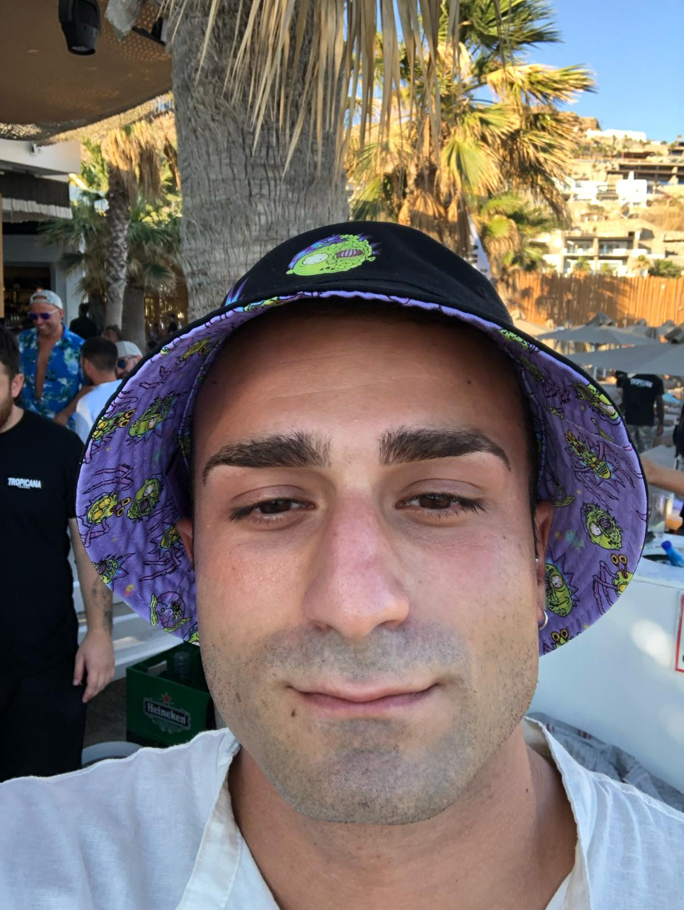
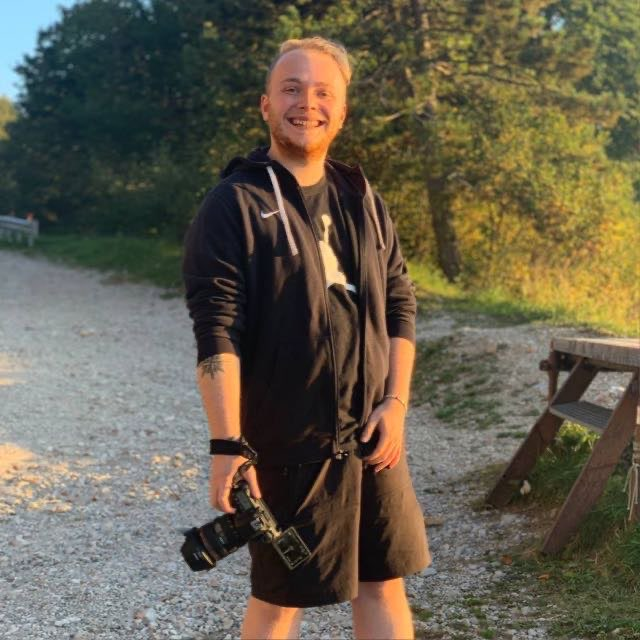

Qualcosa in più su di noi
Benvenuti nel nostro regno virtuale del collezionismo! Siamo un gruppo di nerd incalliti che ha
deciso di
condividere la nostra ossessione per i supereroi, i maghi e gli eroi epici con il mondo intero.
Il nostro negozio è nato dalla determinazione di sette individui gloriosamente testardi, uniti dalla missione di
portare il collezionismo a livelli epici. Abbiamo scavalcato montagne di fumetti e attraversato deserti di
merchandising per portarti i migliori tesori di Marvel, DC, Harry Potter, Il Signore degli Anelli e Star Wars
direttamente alla tua porta.
Siamo qui per farti vivere una vera e propria avventura nel mondo dei collezionisti, senza dover affrontare il
pericolo di uscire di casa. Che tu sia un superfan o un novellino nel mondo del geek, siamo qui per rendere il tuo
viaggio tanto divertente quanto indimenticabile.
Grazie per unirti alla nostra squadra di appassionati. Promettiamo di continuare a rendere questo mondo più strano e
meraviglioso, un cimelio alla volta. Se hai domande, richieste o semplicemente vuoi scambiare battute su Darth
Vader, siamo qui per te.
Che la forza sia con te, sempre!
Il presidente Dario incarna un'aura di leadership irresistibile all'interno del gruppo. La sua personalità
carismatica è un faro per tutti coloro che lo circondano, trasmettendo un senso di fiducia e ispirazione. La sua
gentilezza e dolcezza sono evidenti in ogni interazione, rendendolo non solo un leader, ma anche un amico e un
confidente per i membri dell'gruppo. La sua simpatia è contagiosa, creando un ambiente accogliente e inclusivo per
tutti. In sintesi, il presidente Dario è un pilastro fondamentale, capace di unire le persone e guidarle verso il
successo con il suo carisma e il suo cuore generoso.
Emanuel, il tesoriere dell'gruppo, è una risorsa inestimabile con un talento straordinario per risolvere i
problemi e gestire ogni sfida con destrezza. La sua capacità di adattarsi a situazioni impreviste e trovare
soluzioni creative lo rende un vero e proprio "tuttofare". Inoltre, come "colui che detiene il conio", Emanuel
gestisce con responsabilità le risorse finanziarie del gruppo, garantendo una gestione oculata e trasparente dei
fondi.

Emanuel
Incarnato
Tesoriere

Vice
Presidente
Mergiatore
Luca, il vice presidente dell'gruppo, si distingue per la sua straordinaria dedizione e impegno nel ruolo che
ricopre. Conosciuto affettuosamente come "il mergiatore supremo", Luca è sempre pronto a immergersi nelle sfide
più complesse .
Oltre alla sua abilità nel gestire le responsabilità associative, Luca è anche noto per il suo aspetto distintivo,
in particolare per la sua "vice barba morbidosa", che riflette la sua personalità accogliente e rassicurante.
Fred è un membro prezioso dell'gruppo, conosciuto affettuosamente come "l'uomo barbuto più dolce del west". La sua
presenza è sinonimo di calore e gentilezza, e la sua barba impeccabile è diventata quasi una leggenda tra i membri
dell'gruppo, tanto che viene spesso definita "la barba perfetta di Dios". Fred porta con sé un'aura di
tranquillità e saggezza, sempre pronto ad ascoltare e ad offrire il suo sostegno a chiunque ne abbia bisogno. La
sua capacità di stabilire connessioni autentiche con gli altri è un punto di forza, rendendolo un punto di
riferimento per l'intera comunità. In sintesi, Fred è molto più di un semplice membro dell'gruppo; è un faro di
bontà e positività, con una barba che incarna la sua personalità accogliente e premurosa.

Fred
Pecoraro
Rollatore

Mario
Varano
TypeScript Master
Mario è una risorsa straordinaria nel gruppo, con una padronanza impeccabile di TypeScript che lo colloca al
vertice del suo campo. La sua competenza nel linguaggio è paragonabile a quella di un maestro, e i suoi contributi
sono fondamentali per lo sviluppo e il successo dei progetti del gruppo. Tuttavia, ciò che distingue veramente
Mario è la sua natura coccolosa e premurosa. È sempre disponibile a condividere le sue conoscenze e ad aiutare i
suoi colleghi in ogni modo possibile. La sua gentilezza e la sua pazienza nel guidare gli altri attraverso i
complessi meandri di TypeScript lo rendono un punto di riferimento per tutti coloro che cercano assistenza. In
definitiva, Mario è molto più di un semplice esperto di TypeScript; è un mentore affettuoso e premuroso che
abbraccia la sua comunità con calore e dedizione.
Lorenzo è il sergente del gruppo, una figura rispettata e affidabile all'interno dell'associazione. La sua
leadership è caratterizzata da un mix di disciplina e calma, e si distingue per la sua capacità di guidare gli
altri con fermezza ma anche con comprensione. È sempre presente per offrire supporto e consigli, sia nelle
situazioni più complesse che nelle attività quotidiane dell'associazione. La sua dedizione al gruppo e la sua
capacità di prendersi cura dei suoi membri lo rendono una figura centrale nell'ambiente di lavoro, e la sua
presenza costante e affidabile è un elemento chiave per il successo del team.

Lorenco
Pelhuri
Sergente

Simone
Acquadro
Riparatore
Simone è un membro fondamentale del grupp, conosciuto per le sue abilità straordinarie nel riparare e risolvere
qualsiasi problema tecnico. La sua reputazione di "riparatore" è ben meritata, poiché è sempre pronto a mettere le
mani in pasta per trovare soluzioni creative ai problemi che si presentano. La sua conoscenza e la sua esperienza
nel campo lo rendono un punto di riferimento per tutti coloro che hanno bisogno di assistenza tecnica. Tuttavia,
ciò che lo distingue davvero è la sua natura altruista e generosa. Simone non si limita a risolvere i problemi
tecnici, ma lo fa con un atteggiamento premuroso e attento alle esigenze degli altri